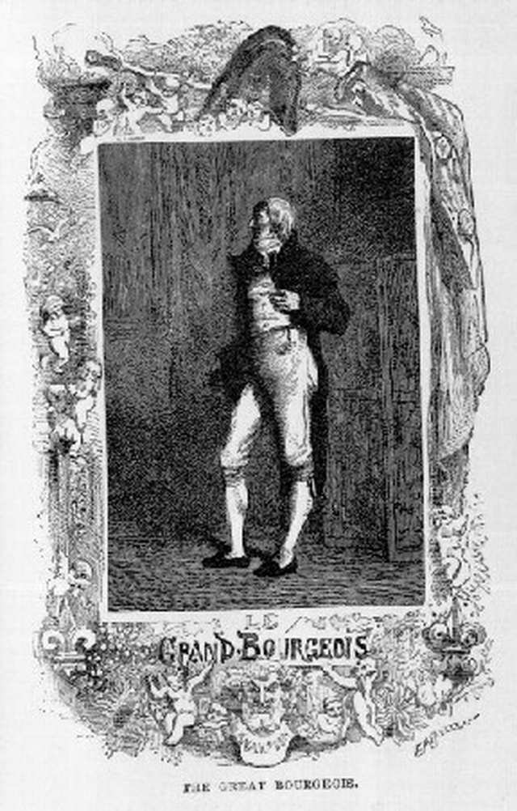
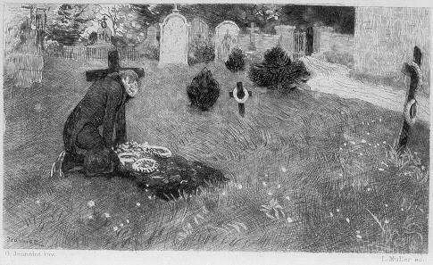
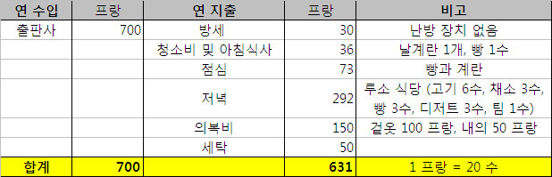
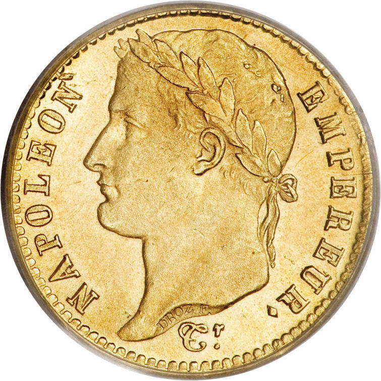
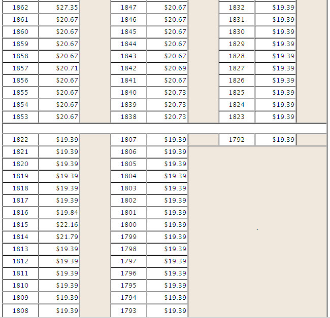
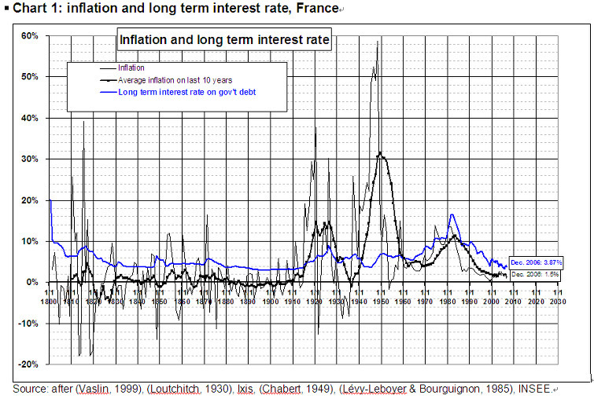
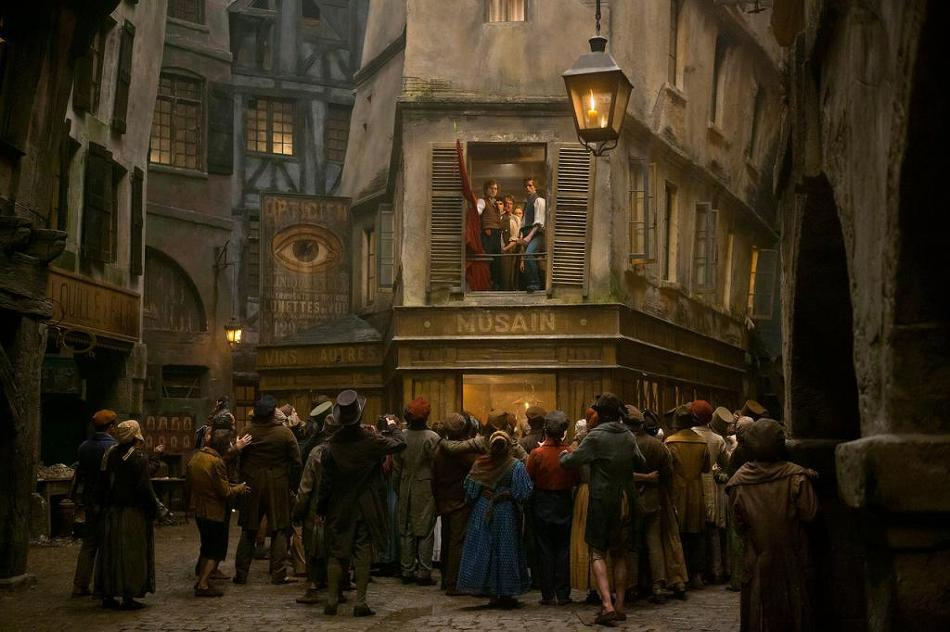

속물들을 위한 레미제라블 속의 돈 이야기
게시: 2018-12-20T06:30:00+09:00
레미제라블의 주인공 마리우스는 가난한 청년이지만, 그의 외할아버지는 부자로 나옵니다. 그러나 사실 외할아버지도 대단한 부자는 아닙니다. 영화 속에서, "Look down - Paris" 부분에서 마리우스와 앙졸라가 노동자들을 선동하고 있을 때 외할아버지가 그 광경을 마차 안에서 지켜보면서 통탄하고 있는 모습이 잠깐 나오지요 ? 하지만 소설 속에서 이 외할아버지는 마차를 소유하고 있지 않습니다. 당시 2인승 작은 마차라도 소유하려면 1달 유지비만도 500프랑 정도로서 엄청나게 비쌌거든요. 이 외할아버지가 마차를 탔다면 현재의 택시 같은 삯마차를 탄 것입니다. 과연 이 외할아버지 질노르망(Gillenormand) 씨는 어느 정도의 재산을 가진 사람이었을까요 ?

(이 분이 마리우스의 외할아버지 질노르망 씨입니다. 그는 결코 귀족이 아니라, 그냥 Grand Bourgeois, 즉 앙시앵 레짐 (구 체제)를 지지하는 부유한 시민입니다. 현대어로 하면 보수우익 노친네정도지요.)
-----------------------------------------------------------------------------
그의 아내, 두 번째 아내는 그의 재산을 하도 잘 관리해서, 어느 날 그가 홀아비가 되었을 때, 질노르망 씨에게는 꼭 먹고살 만한 재산이 남아 있었는데, 즉 거의 전부를 종신 연금으로 예금함으로써 연수입이 1만 5천 프랑쯤 되었는데, 그 중 3/4은 그의 죽음과 함께 소멸되게 되어 있었다. 그는 망설이지 않았다. 유산을 남기려는 배려는 별로 염두에 없었으니까. 더구나 그는 상속 재산에는 뜻 밖의 일이 일어나는 것을, 예컨대 그것이 '국가 재산'이 되는 것을 보았고, 제3 정리 공채의 변화를 목격했으며, 원장은 별로 믿지 않았다. "캥캉푸아 거리의 은행 밖에 없지 않은가 !" 라고 그는 말했다. 피유 뒤 칼베르 거리의 집은 앞서 말했 듯이 그의 소유였다.
-----------------------------------------------------------------------------
여기서 또 민음사 번역의 문제가 나옵니다. 아마 저 번역은 구글이 나오기 전인 수십년 전에 해놓은 번역 같아요. 저 제3 정리 공채 (tiers consolidé) 라는 것은 불어를 직역하면 그런 번역이 나오는데, 다른 영문판을 보면 이를 'consolidated three per cents'로 번역했더군요. 즉 원금 상환없이 영구적으로 3%의 이자를 주는 3% 통합 영구 채권를 말하는 것입니다. 영국의 통합 영구채인 'Consol'에 해당하는 채권인데, 아마도 뭔가 안 좋은 일이 있었나 보지요 ? 또 원장(grand-livre)이라는 것은 Great Book of the Public Debt 로서, 국채 원장을 뜻하는 것입니다. 그리고 캥캉푸아 거리 (Rue Quincampois)라는 것은 은행이 아니라, 나폴레옹 이전 시대에 파리 증권 거래소(Bourse)가 있던 거리 이름입니다. 즉, 국채 원장이라고 해봐야 증권 거래소에서 거래되는 유가 증권에 불과하다, 즉 못 믿을 물건이다 라고 비꼬는 것입니다.
(현대의 캥캉푸와 거리입니다. 현대의 파리 증권 거래소는 이곳이 아니라 Palais Brongniart에 있는데, 이는 나폴레옹이 지은 것입니다.)
그러니까, 질노르망 씨가 작은 2인승 마차라도 소유했다면, 1년에 6천 프랑을 그 유지비로 써야 했는데 (세금, 말 사료 값, 마차 수리비, 마부 임금 등등) 그건 자신의 1년 연금의 1/3에 해당하는 금액이었으니까, 당연히 질노르망 씨는 마차를 소유하지 못했습니다. 그런데, 대체 500프랑이면 어느 정도의 액수이고, 1만 5천 프랑이면 또 어느 정도의 금액이었을까요 ? 현재 우리나라 원화 가치로 따져보고 싶다는 생각이 든다면, 저는 확실히 속물이겠지요 ?
일단 당시 프랑 화의 가치에 대해서 어렴풋이나마 짐작하게 해주는 구절을 레미제라블 속에서 모아보았습니다. 가령 가정에 숙식하는 요리사의 월급은 50 프랑이군요.
----------------------------------------------------------------------------
어느 날, 문지기 족속 같은 키다리로 거만한 요리사 하나가, 요리의 명수가 나타났다. "월급은 얼마를 받고 싶은고 ?" 하고 질노르망 씨는 물었다. "30프랑입니다." "이름은 무엇인고 ?" "올랭피라고 합니다." "50프랑 주겠다. 그리고 이름은 니콜레트라고 해라."
----------------------------------------------------------------------------

(마리우스가 외할아버지 몰래 자기 아버지 퐁메르시 중령의 무덤에 가서 슬퍼하는 장면의 삽화입니다. 마리우스는 결국 생전의 아버지는 한번도 보지 못했는데, 죽은 아버지를 도서관에 가서 신문 및 정부 보고서를 통해 찾아보고, 결국 보나파르트주의자가 되어 버리지요. 할아버지는 왕당파, 손자는 보나파르트주의자 내지는 공화주의자라... 요즘 한국 사회와 많이 비슷합니다.)
아버지 퐁메르시 중령의 비밀을 알게 되면서 급작스럽게 보나르파트주의자가 된 마리우스는, 보나파르트나 혁명이라면 질색을 하던 보호자이자 외할아버지인 질노르망 씨와 양립할 수 없는 관계가 되어 버립니다. 마리우스의 변화에 분노한 외할아버지는 마리우스를 집에서 내쫓는데, 그러면서도 눈에 넣어도 아프지 않던 외손자에 대한 정이 남아 있어서, 마리우스의 이모이자 자신의 딸인 질노르망 양에게 6개월에 60 피스톨을 보내주라고 하지요. 1 피스톨(pistole)은 10 프랑에 해당하는 옛 스페인 금화입니다. 그러니까 한달에 100 프랑, 1년에 1200 프랑을 보내주는 셈입니다. 이 정도면 충분한 생활비일까요 ?
(앙졸라도 알고 보면 부르조아 계급 출신입니다.)
마리우스가 집을 나와서 사귀게 되는 ABC의 벗들은 경제적으로 어떤지 살펴보면 그 답을 아실 수 있습니다. 일단 앙졸라(Enjolras)는 그냥 부자집 외아들이라는 것 말고는 자세한 신상에 대해 나오는 것이 없습니다. 다른 친구들도 대충 먹고 살만 한 중산층 집안의 자제인 것으로 보입니다. 왜냐하면 먹고 사는 문제로 궁핍한 흔적이 보이지 않거든요. 그 중 바오렐(Bahorel)의 부모는 농부인데, 그래도 꽤 규모가 있는 자작농인 모양입니다. 그 부모는 '법률 공부를 하고 있는 것으로 되어 있는' 바오렐에게 1년에 3천 프랑의 생활비를 보내주었는데, 작가인 빅토르 위고는 이에 대해 '꽤 넉넉한 액수'라고 표현을 했습니다.
(마리우스와 앙졸라, 그리고 앙졸라와 마주 보고 있는 그랑테르를 빼면 누가 푀이고 누가 쿠르페이락인지 전혀 못 알아보겠어요.)
다만 ABC의 벗들 중 유일한 노동자 계층인 푀이(Feuilly)가 1프랑의 가치를 말해줍니다. 그는 부채를 만드는 노동자인데, 원래 고아 출신으로서 일을 하면서도 독학을 해서 읽고 쓰는 것 뿐만 아니라 역사를 공부한 지식인입니다. 그는 하루에 간신히 3프랑을 벌었습니다. 노동자라고 해도 일요일은 놀았을테니, 기껏해야 한달에 75프랑을 벌었다고 보시면 되겠습니다. 1년이면 900프랑입니다. 놀고 먹는 바오렐의 3000프랑에 비하면 너무나 작은 액수이지요.
더 자세히 보시지요. 마리우스가 출판사 일을 하면서 가난하게 살 때, 그의 가계부를 작성해보았습니다.

(마리우스는 결국 집을 나가서 변호사가 되는데, 정작 변호사로서의 수입은 없고 출판사에 글을 써주면서 돈을 법니다. 애초에 친구인 쿠르페이락이 이 출판사 일을 소개해줄 때 '영어하고 독일어를 알아야 할 수 있는 일인데' 라고 하자, 마리우스는 겁도 없이 '배워서 하지 뭐' 하면서 도전해서, 결국 그 일을 따냅니다.)
대충 이러면 푀이의 생활이 어떠했을지 짐작이 가실 겁니다. 혼자서는 그럭저럭 먹고 살아도, 가족을 부양하기에는 턱없이 부족한 액수이지요. 참고로 마리우스가 저녁 식사를 루이 식당이라는 곳에 가서 매일 외식을 했다고 해서 그가 아직도 부자 시절을 못 잊고 된장남 생활을 하고 있다고 비난해서는 안 됩니다. 그의 집은 수도는 커녕 (당시 파리에 그런 거 없었습니다) 난로조차 없는 곳이라서 취사가 아예 불가능했거든요. 마리우스가 그 식당에서 어느 정도의 절약을 했는가 하면 '수프는 먹지 않고, 포도주 대신 항상 물을 마셨다' 라고 되어 있습니다.
(마리우스가 원작에서도 미남으로 나오냐고요 ? 예, 앙졸라 만큼은 아니지만 지나가는 여자들이 힐끔힐끔 쳐다볼 정도의 아름다운 흑발 청년으로 나옵니다. 그런데 그는 여자들이 자기를 쳐다보는 이유가 자신의 구멍난 셔츠와 팔꿈치가 헤어진 자켓 때문인줄 알고 부끄러워하지요.)
자, 저런 액수가 과연 현재 가치로 어느 정도에 해당할까요 ? 당시 1프랑의 현재 가치를 제대로 평가하는 것은 너무나도 어려운 일입니다. 고려해야 할 요소가 금리며 인플레며 구매력 산업 생산성 등등 너무나도 많으니까요. 하지만 그냥 금의 가치는 영원하다고 가정하고 계산해보면 의외로 쉽게 답이 나옵니다. 당시 루이 금화 (Louis d'Or)는 20프랑 짜리였는데, 당시 원칙은 그 금화를 녹였을 때 나오는 금의 양이 실제 그 금화 액면가와 동일해야 한다는 것이었습니다. (실제로는 국가에서 주조한 금화는 그 신뢰성 때문에 더 높은 가치를 인정해주었습니다만, 여기서는 계산상의 편의를 위해 그냥 생략하겠습니다.)

(이것이 20프랑짜리 나폴레옹 금화입니다.)
당시 프랑스 화폐 단위에 대해 간단히 설명을 드리고 시작하겠습니다. 일단 프랑스 혁명 이전의 프랑스 화폐 단위는 크게 리브르 (livre = 20 sous), 수 (sou = 12 derniers), 데르니에 (dernier)로 나뉘었습니다. 프랑스어로 livre라고 하면 책이라는 뜻도 있지만 원래 영어의 pound에 해당하는 무게 단위입니다. 즉 1파운드 무게의 은에 해당하는 가치를 1 리브르로 정했던 것이지요. 이는 영국도 마찬가지였습니다. (그래서 지금도 영국 파운드화의 기호가 P가 아니라 L 모양인 것입니다.)
(설마 이 표시가 영국 파운드 스털링 화의 심볼이라는 거 모르시는 분은 없으시겠지요.)
그러다가 혁명 정부 들어서서 과거의 도량형을 바꾸면서 공식 화폐도 1795년에 프랑(franc = 100 centimes)과 상팀(centime)으로 바뀌게 되었습니다. 하지만 사회라는 것이 정부 마음대로 되는 것이 아닌지라, 여전히 리브르나 수 라는 단위도 여전히 혼용되어 쓰였는데, 특히 리브르는 원래 프랑보다는 약간 더 큰 단위였습니다만, 그에 상관없이 1리브르 = 1프랑이라는 약간 부정확한 개념이 그대로 통용되었던 모양입니다. 원본에서는 어떤 경우에는 리브르, 어떤 경우에는 프랑이라는 단위를 썼는데, 제가 산 민음사 레미제라블에서는 그런 구분이 불필요하다고 생각했는지 원본에서는 리브르라고 쓴 경우에도 그냥 무조건 프랑으로 번역을 해버리는 바람에, 1프랑=20수의 개념이 계속 나옵니다. 실제로도 리브르나 프랑이나 큰 차이가 나는 것은 아니니까, 여기서도 그냥 그렇게 1리브르=1프랑이라고 가정하겠습니다.
흔히 나폴레옹을 군사적 천재로만 받아들입니다만, 사실 나폴레옹은 오늘날 프랑스, 더 나아가 유럽 전체의 기틀을 닦은 사람으로서, 오늘날 위인전에 올라가는 것이 전혀 이상하지 않은 진짜 위인입니다. 아우스터를리츠나 예나, 마렝고 등의 승전보다도 오히려 더 프랑스를 빛낸 나폴레옹의 업적은 바로 나폴레옹 법전의 편찬, 고등학교인 리세(lycee) 제도의 확립, 그리고 프랑스 중앙은행의 설립입니다. 그 중 프랑스 중앙은행은 영국의 영란은행을 본 뜬 것이라서 비록 창의성 면에서는 떨어지므로, 나폴레옹의 2대 업적에서는 빠집니다만 나폴레옹이 몰락하고 부르봉 왕가가 복위한 이후에도 나폴레옹이 이룩한 이 제도들은 그대로 이어졌던 것을 보더라도, 그의 위대함을 알 수 있습니다. 그 덕분에 총재 정부 시절 아시냐 지폐의 실패로 인해 하이퍼 인플레를 겪던 프랑스의 재정난은 안정을 되찾았고, 프랑스의 인플레는 제1차 세계대전 직전까지도 매우 안정적이었습니다. 즉, 1810년 경인 나폴레옹 당시의 물가나 1832년 경인 레미제라블 시대의 물가나 크게 다르지 않았다는 이야기지요.

(위 표가 연도별 금 1 온스의 가격입니다. 금 가격이 이렇게 상상을 초월하게 뛰게 된 것은 1차 세계 대전 이후 세계 대공황 때부터 좀 이상하더니 1970년 경에 미국이 금태환 제도를 포기하면서부터였습니다. 그때 이후 금값은 그야말로 폭등을 거듭했는데, 사실 금값이 올랐다가 보다는 화폐가치가 떨어진 것이지요.)
덕분에 당시 나폴레옹 금화로부터 쉽게 당시 1프랑의 가치를 현재 대한민국 원화로 환산이 가능합니다. 40프랑짜리 나폴레옹 금화 1개 속에 들어있는 금의 양은 11.614g, 20프랑짜리 나폴레옹 금화 1개 속에 들어있는 금의 양은 5.801g 이었습니다. 현재 금 1g의 가치를 원화로 대략 56,000원이라고 보면, 레미제라블 시대의 1프랑은 현재 우리 원화로 약 16,000원에 해당한다고 볼 수 있습니다.
그러니까, ABC의 벗들 중 푀이의 한달 월급은 약 120만원이고, 바오렐이 넉넉하게 써대던 1년 생활비는 약 4,800만원이었던 것이지요. 더불어, 질노르망 씨가 외손자 마리우스에게 '최저 생계비'로 주려고 했던 돈은 대략 연간 1,920만원 정도였습니다. 아울러, 졸지에 이름이 니콜레트로 바뀌어야 했던 질노르망 씨 요리사의 월급은 80만원인 것이었지요. (하긴 니콜레트는 그 외에 숙식 제공이 되었으니까...) 그리고 마리우스가 가난하게 살 시절 매일 저녁 루이 식당에서 먹었던 조촐하지만 푸짐했던 저녁 식사의 가격은 1만2천8백원 정도였습니다. 조촐했던 빵과 날계란 점심값은 3200원 꼴이었고요. 그러니까 1년에 식비로 584만원을 쓴 것이고, 그에 비해 1년 피복비는 겉옷 속옷 다 합해서 240만원 정도 되는 셈입니다. 현재 여러분의 사정과 비교했을 때 대략 어떤가요 ?
(이 사진은 본문의 내용과는 아무 상관없습니다. 앙졸라가 부르는 Red - Black의 가사 중에서 사랑에 빠진 마리우스에게 이런 말을 하는 부분이 있지요. - Who cares about your lonely soul ? )
자, 그럼 여기서 좀더 속물스러운 분들께서 솔깃해하실 이야기를 해보지요. 질노르망 씨는 살고 있는 집을 제외한 남은 재산 전부를 종신 연금으로, 그것도 본인 사망시 3/4이 소멸되는 '일부 상속형' 연금 상품으로 다 가입해 놓았고, 그래서 연간 15,000 프랑의 수입이 있다고 했습니다. 원화로 따지면 연간 2억 4천만원입니다 ! 충분히 부자집인 거지요. 그런데 이렇게 풍족한 연금이 나오려면 대체 원금은 얼마였을까요 ?
그에 대한 설명이, 놀랍게도 레미제라블 본문에서 어느 정도 나옵니다 ! 바리케이드 사건이 끝나고, 모두가 화해를 한 뒤에, 질노르망 씨에게 코제트가 장발장과 함께 와서 인사를 하지요. 질노르망 씨는 코제트의 아름다움과 천진함에 반해서 참으로 예쁜 아이라고 칭찬을 하다가, 문득 그녀의 손을 잡고 우울해 합니다.
"참으로 유감이구나 ! 내가 그것을 생각하니 ! 내가 가지고 있는 것의 반 이상은 종신연금이니, 내가 살아 있는 동안은 그래도 아직 괜찮겠지만, 내가 죽은 뒤에는, 지금부터 이십 년쯤 후에는, 아 ! 내 가엾은 아이들아, 너희들은 무일푼이 될 것이다 ! 당신의 아름다운 흰 손도, 남작 부인, 생활이 궁하여 일을 해야 할 거요."
이때 장발장이 마들렌 시장으로 일하면서 모아두었던 돈 58만4천 프랑을 코제트의 지참금으로 내놓습니다. 현재 가치로 93억4천만원 정도입니다 !!!
(자기야, 이제 우린 폈어 ! 우리 아버지가 나 몰래 감춰두신 재산이 90억이 넘는대 !)
아마도 마리우스는 이 돈으로 자기 외할아버지처럼 종신연금을 넣은 모양이에요. 나중에 장발장이 자신이 사실은 전과자이며, 그래서 떠나겠다고 하자, 마리우스는 못 이기는 척 허락하면서도, 장발장이 준 그 지참금에 대해서도 꺼림직하게 여기게 됩니다. 그러면서 마리우스와 코제트와 한 대화가 코제트의 입을 통해서 나옵니다.
"코제트, 우리는 3만 리브르의 연금을 가지고 있어. 2만7천은 네가 갖고 있는 것이고, 3천은 할아버지가 주시는 거야. 너는 그 중 3천 리브르만으로 살아갈 용기가 있겠니 ?"
(민음사 레미제라블 제5편 424페이지에는 '너는 이 3만 프랑으로 살아갈 용기가...' 라고 되어 있는데, 이거 오타입니다. 원본을 확인했는데, 3천이 맞습니다. 단위도 리브르이고요.)
(마리우스가 코제트에게 '그 중 3천 리브르만으로 살아갈 용기가 있겠니 ?' 라고 물었을 때 코제트의 대답은 무엇이었을까요 ? "물론. 난 너만 있으면 돼.")
즉 마리우스는 장발장이 준 지참금은 범죄에 연관된 돈이라고 의심하여, 가급적 그 돈을 쓰고 싶지 않았던 것이지요. 아무튼 여기서 실마리가 나옵니다. 즉, 58만4천 프랑으로 연 2만7천 프랑의 연금이 나오는 것이지요. 원금이 워낙 컸으므로, 아마도 원금은 그대로 보존하는 상품에 가입했을 것으로 보이는데, 그렇다면 연 수익률이 4.62%에 해당하는 연금 상품에 가입한 것입니다. 실제로 1830년대의 프랑스 금리는 대략 4% 정도였으니까, 연금 상품에 가입했다면 저 정도의 금액이 나오는 것이 맞습니다.
저처럼 가족의 생계를 책임진 40대 가장의 입장에서는 3만 프랑은 고사하고 1년에 3천 프랑, 그러니까 연간 4800만원의 연금만 있다고 해도 목구멍에서 수건 짜는 소리가 들릴 만큼 부러운 이야기입니다. 그래서 저도 항상 어떻게 돈을 모으고 어떻게 돈을 굴려야 제 가족이 생활비 걱정 안하고 살 수 있을까 하고 궁리하고 고민합니다. 물론 그런 고민도 돈이 있는 사람들이나 하는 것이긴 합니다만, 크게 나누면 수익형 부동산에 투자하느냐 연금을 택하느냐 펀드 같은 것에 투자하느냐 그 정도가 아닐까 합니다. 그런데 질노르망 씨나 마리우스 부부는 종신 연금을 택한 것 같아요.
(근데 자기야... 이거 연 4.6%가 과연 최선일까 ? 인플레 헷지는 어떻게 하려고 ?)
그런데 종신 연금이 답일까요 ? 글쎄요, 위에서도 잠깐 언급했습니다만, 질노르망 씨가 살던 시대에는 금본위제도 덕분에 장기적인 측면에서의 인플레가 거의 없거나, 있어도 매우 안정적이었습니다. 즉, 금리보다 물가인상률이 훨씬 낮았던 것입니다. 그런 상황에서는 10년 20년 후에도 동일한 금액의 연금이 나온다고 해도, 걱정할 것이 없지요. 그러나, 지금 받는 100만원의 돈 가치가, 10년 20년 후에는 지금 가치의 절반으로 떨어진다고 하면 이야기가 다릅니다. 지금 우리나라 금리가 매우 낮은데, 물가는 원유나 곡물 등 원자재 가격 인상으로 인해서 계속 오르고 있지요. 실질적인 마이너스 금리 시대입니다. 이런 시대에는 연금은 아무래도 답이 아닌 것 같아요. 연금이 물가 인상율과 맞물려 계속 증액되는 구조라면 모를까... 그런데 그런 상품은 아직 못 본 것 같습니다. 이래저래 욕을 먹는 국민연금 빼고는요.

(물론 단기적인 인플레야 꽤 있었습니다만, 레미제라블 시대인 저 1800 ~ 1840 사이에 실제 인플레는 매우 낮았습니다. 그에 비해 금리는 4~5% 수준이었지요. 저 시대에는 정말 종신 연금이라는 것이 안전한 투자 수단이 될 수 있었습니다.)
여기서 다시 마들렌 시장, 그러니까 장발장에게로 관심을 되돌려보시지요. 장발장은 코제트와 함께 파리에 살면서 가난한 사람들에게 많은 적선을 하며 '착한 삶'을 산 것으로 되어 있습니다. 그런데 자기 수양 딸인 코제트에게 무려 60만 프랑에 가까운, 즉 90억원이 넘는 거액을 증여해주었네요 !! 이건 가난한 사람들에게 베풀면서 살라는 레미제라블 정신에 좀 어긋나는 것 아닌가요 ? 생각해보면 팡틴느의 비참한 최후도 장발장의 탓이 될 수 있습니다. 애초에 팡틴느에게 충분한 급여를 주지 않았기 때문에, 팡틴느는 직장을 잃으면서 곧장 나락으로 추락한 것이니까요. 결국 장발장은 우익 보수층이 더 좋아해야 할 인물 아닐까요 ?
(실제로도 팡틴느는 처음에 장발장이 구원의 손길을 내밀 때 그 얼굴에 침을 뱉습니다. 자기가 이 모양이 된 것이 장발장이 자기를 내쫓았기 때문이라고 생각했으니까요. 하지만 장발장이 그녀를 불미스러운 사생활을 이유로 내보내면서 규정에도 없는 퇴직금 조로 50프랑을 준 것은 기억하지 못했습니다.)
글쎄요. 우익이건 좌익이건 다 집어치우고, 이런 점을 생각해보시지요. 장발장은 그 유리 공장을 운영하면서, 라피트 은행에 자기 명의로 무려 63만 프랑의 금액을 예금했습니다. 이 돈이 결국 나중에 코제트에게 돌아가게 되지요. 하지만 장발장은 63만 프랑을 예금하면서 동시에, 지역 사회인 몽트뢰유 시의 빈민들을 위해 무려 100만 프랑 이상을 썼습니다. 일단 빈민을 위한 병원을 세우고, 빈민가 소년 소녀들을 위해 학교를 세우고, 당시 프랑스에는 아예 그 개념 자체가 희미했던 탁아소를 세우고, 무료 약국을 세웠습니다. 무엇보다도, 그는 가난했던 그 지역 주민들에게 일자리를 주었습니다. 저는 그것이 가장 큰 선행이라고 생각합니다.

(세상을 바로 잡는 일 중에는 저렇게 정치 운동을 벌이고 바리케이드를 쌓는 것도 있겠지만, 공장을 세우고 사람을 고용하여 사람들이 누군가의 자선에 의존하지 않고, 당당하게 자기 힘으로 먹고 살 수 있도록 '일자리를 만드는 것'도 있습니다.)
특히 그런 일자리가 새로운 기술 혁신에 의해서 만들어진 것이라면 그건 정말 인류 전체에 대한 공헌이라고 할 수 있지요. 영화에도 잠깐 나옵니다만, 장발장이 죽기 전에 코제트에게 읽어보라고 주는 편지가 나오지요. 영화 속에서는 그 편지가 '증오심으로 살다가 너를 맡게 되면서부터 사랑으로 살게 된 사람의 이야기'라고 나오지요. 뮤지컬의 대사는 '코제트 너를 항상 사랑했던 사람들의 이야기'라고 표현합니다. 그러나 실제 원작에서는, 그 편지는 코제트에게 주어진 지참금이 어떤 식으로 만들어진 것인지 해명하는 내용이 들어 있었습니다. 장발장이 어떤 기술 혁신을 이룩했고, 그로 인한 수익금이 어느 정도였는지를 장황하게 설명하고, 그러니까 그 돈은 정직한 것이니 부디 마리우스와 코제트가 그 돈으로 행복하게 살기를 바란다는 내용이 들어있었지요. 알고보면 장발장은 스티브 잡스였던 셈이지요. 이 정도 되는 인물이 자기 수양 딸에게 60만 프랑을 물려준다고 해서 누가 비난할 수 있겠습니까 ? 어떻게 보면 정말 장발장이야 말로 진정한 보수 진영의 영웅일 수 있습니다. 그리고 우리나라가 (부자들에게 세금을 깎아줘야 서민들의 삶에 도움이 된다고 주장하는 가짜 보수들 말고) 이런 진짜 보수 인사들로 가득 차있다면 정말 우리나라는 행복한 나라가 되겠지요.
(장발장은 므슈 포슐르방으로서 코제트에게 베푼 것보다 훨씬 더 많은 것을 마들렌 시장으로서 몽트뢰유 시의 빈민들을 위해 베풀었습니다.)
팡틴느의 몰락은 장발장이 박봉을 주었기 때문 아니냐고요 ? 애초에 팡틴느가 몰락했던 것은 사실 팡틴느가 고향 마을에 되돌아 왔을때, 시작부터 가구 등을 들이느라 빚을 지고 시작했기 때문입니다. 처음에 마들렌 시장, 그러니까 장발장의 공장에 취직했을 때 생각보다 급료가 괜찮았으므로, 팡틴느도 '이젠 살아갈 수 있겠다' 라고 판단하여 마음을 놓고 과감히 빚을 졌던 것입니다. 그러다가 덜컥 뜻하지 않게 직장을 잃게 되었는데, 빚이 있다보니 그 도시를 떠날 수도 없었고, 그렇다고 그 손바닥만한 도시에서 탕녀로 소문이 났으니 다른 일거리를 구하지도 못했지요.
(사실 팡틴느가 몰락한 것은 같이 일하던 동료 여자들의 시기심과 천박한 호기심이 가장 큰 원인이었지요.)
그러니까 여러분, 어떤 경우에도 웬만하면 직접 들어가서 살 주택을 구입할 자금 외에는 빚은 지지 마세요. 빚은 부모님이 자유인으로 낳아주신 여러분 스스로를 노예로 만드는 못된 것입니다. 특히 갚을 수 없는 빚은 정말 그렇습니다. 요즘 자동차 살 때 할부로 사지 않는 사람이 어디 있냐고요 ? 글쎄요... 예전 노예제 시절 사회에서나 지금의 자본주의 사회에서나 중 진정한 자유인이 몇이나 되겠어요 ? 할부금 남은 자동차를 모는 청년은 노예이고, 그냥 버스를 타고 다니는 청년은 자유인인가요 ? 판단은 여러분 각자가 내리셔야지요.